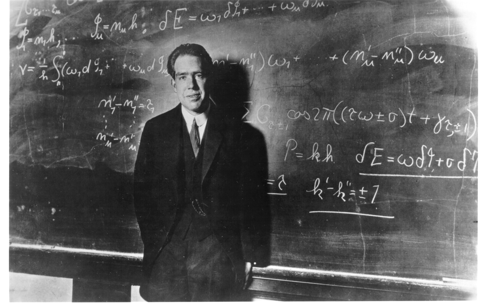

Niels Bohr
1885-1962 AD
Bohr developed the Bohr model of the atom, in which he proposed that energy levels of electrons are discrete and that the electrons revolve in stable orbits around the atomic nucleus but can jump from one energy level (or orbit) to another. Although the Bohr model has been supplanted by other models, its underlying principles remain valid. He conceived the principle of complementarity: that items could be separately analysed in terms of contradictory properties, like behaving as a wave or a stream of particles. The notion of complementarity dominated Bohr's thinking in both science and philosophy. see more...
Next
Isaac Newton